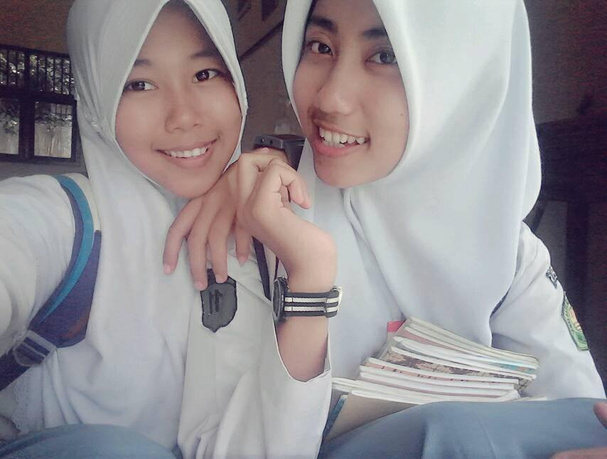
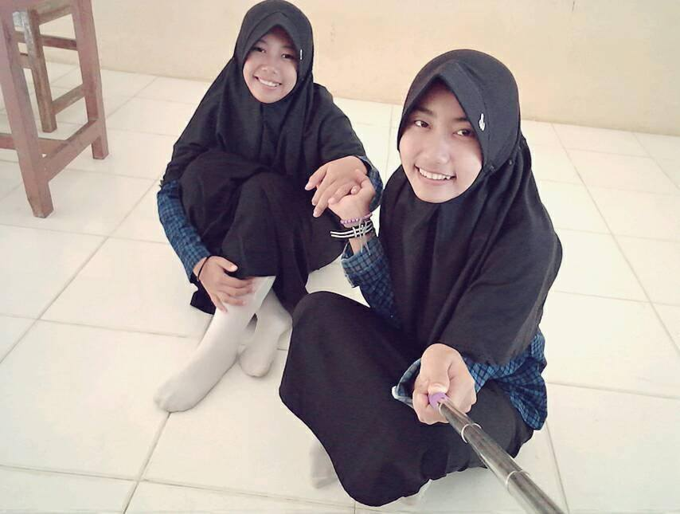
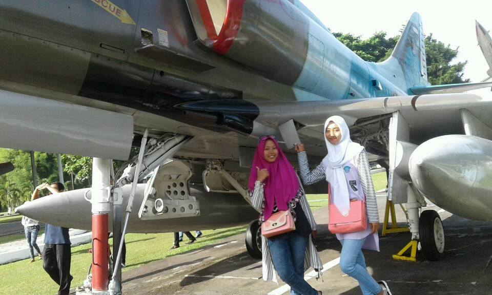
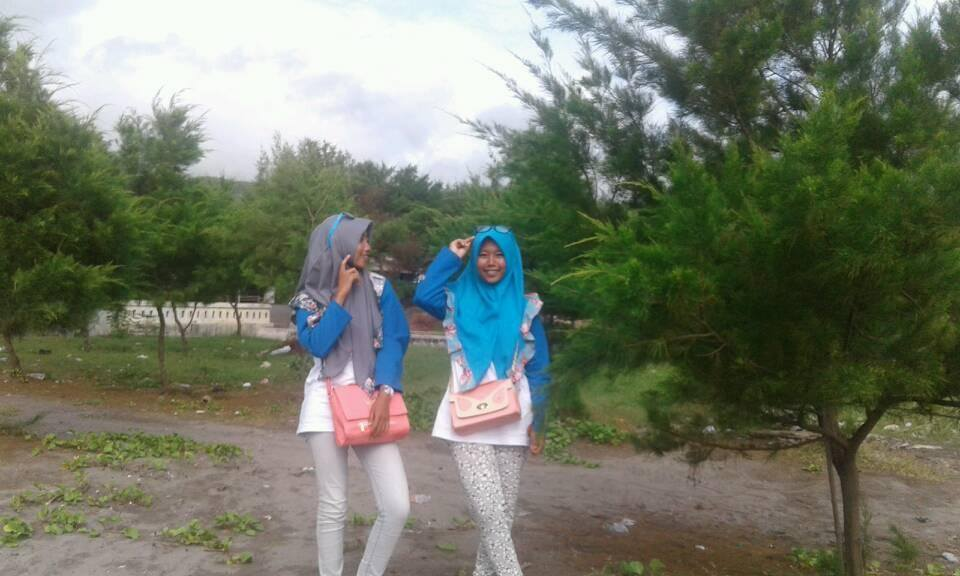
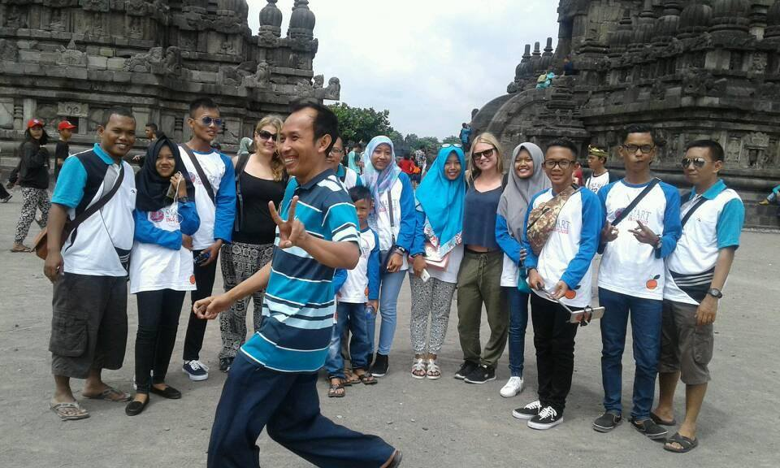

SAHABAT
Hai... di web aku yang pertama ini,aku ingin bercerita tentang sahabat,
Perkenalkan, nama saya Linda Pratiwi. Teman-teman biasa memanggil saya Linday. Saya itu tipe orang yang tidak mudah akrab sama orang, tetapi saat masuk SMA aku mencoba untuk merubah sikap aku itu. Sedikit cerita, dulu waktu aku SMA memiliki seorang sahabat yang sudah seperti saudara bagi aku. Kita kemana-mana selalu bareng, sampai pernah ada yang bilang kalau kita itu kembar (kembar yg terpisahkan,,hehehe). Dia itu bernama Sri Mulyani, teman-teman ku biasa memanggil dia "Sri" beda dengan aku yang lebih suka memanggil dia "Mul". Karena panggilan "Mul" itu menurutku lebih imut...hehehe

Kita sejak dari kelas 1 SMA sampai kelas 3 SMA selalu satu bangku dan duduk paling depan (supaya kelihatan sedikit pintar,,hehe). Karna kita berdua kemana-mana selalu bareng sampai ada kakak kelas yang memanggil kita dengan sebutan "Duo Alay". Tapi padahal kami kan nggak Alay (hemmm), dan sebutan itu dengan seiring berjalannya waktu tidak hanya kakak kelas itu saja yang memanggil kita dengan sebutan "Duo Alay" tetapi guru kita pun kalau di kelas sering memanggil dengan sebutan itu (hadeh). Dan waktu itu pernah Si Mul nggak masuk sekolah, aku di ajakin sama temen kelas ku yang bernama Retno ke kantin. Coba tebak apa yang terjadi..?. Banyak teman-teman (beda kelas) dan juga kakak kelas yang nanya ke aku "Lin kok sendiri, kembaran kamu kemana..?", banyak sekali yang bertanya seperti itu. Malah ada yang mengira kalau kita berantem (hadeh), dan aku jawab aja "Dia nggak msuk, soalnya lagi sakit" "Ohh, kirain musuhan". Selain kita berdua kemana-mana berdua, kita juga banyak sekali kesamaan dari warrna kesukaan, fashion, dan tentunya hobi dan masih banyak lagi. Saat kita kelas 2 SMA, kita benar-benar terlihat seperti orang kembar. Karna dari mulai tas, sepatu, jam tangan yang kita pakai itu sama persis (cuman beda muka sama tinggi,,hehe),warnanya sama,modelnya juga sama. Bagaimana kita sudah terlihat kembar belum,,,,hehehehe

Selain yang aku ceritakan diatas, dulu banyak yang bertanya ke aku "Lin kenapa sih kok kamu tuh bisa sedekat itu sama Sri" (Pertanyaan ini yang sering banget di tanyakan). Lalu aku jawab "Karna dia orang yang paling ngertiin aku selain Ortuku, dia orang yang bijaksana, dia asik untuk tempat curhat, dan dia yang selalu ada disaat aku sedih maupun senang. Dan ntah kenapa aku itu bisa selengket ini sama dia, mungkin aja ini takdir Tuhan:)".
Dimana ada Pertemuan pasti akan ada Perpisahan. Ya seperti kita ini yang selama 3th bersama setelah Lulus SMA kita berdua terpisah jarak. Aku pergi untuk melanjutkan pendidikanku di Yogyakarta, sedangkan Dia memilih untuk bekerja. Walaupun begitu Persahabatan kita tidak selesai disitu, meskipun kita jauh kita tidak pernah putus komunikasi. Dan tetap dia yang mengerti aku:). Kalau di tanya "Rindu or No", jawabannya yasudah pasti Sangatt Rinduu. Rindu moment-moment yang sudah aku dan Mul ciptakan.
Dan saat aku tiba di Yogyakarta untuk melihat Kampus baruku, Ternyata Campus nya tidak jauh dari tempat penginapan aku, Mul, teman-teman SMA yang lain dan tentu nya guru-guru SMA aku yang waktu itu Studytour di Yogyakarta. Waktu awal kelas 3 SMA sekolahku mengadakan StudyTour ke Yogyakarta, Bandung, dan Jakarta. Pada saat di Yogyakarta kami semua menginap di Hotel Olympic yang tempat nya dekat sekali dengan Campus aku sekarang. Dan setiap Campus aku mengadakan kegiatan di Hotel itu pasti saya ikut.Karna saat berada disitu rasanya aku mengingat kembali saat Aku dan Mul berada disitu, dan waktu aku di Hotel itu pasti aku foto/video.in dan aku kirim ke Mul dan dia pun ingat masa-masa itu. Kita berharap semoga masa-masa itu bisa terulag kembali,,Amiinnn :)

Mungkin sahabat tidak pernah mengatakan bahwa ia sayang dan peduli pada diriku. Tetapi aku yakin, Ia adalah sahabat yang sangat sayang padaku dan dia adalah sahabat terbaikku.
Walau kamu sahabatku tak ada di sampingku, tetapi kamu selalu bersamayam di dalam hatiku. Aku tak pernah lupa untuk mendoakanmu dan aku hanya berharap doa ini yang menembus rinduku padamu.
Kurang lebih nya ya seperti itulah kisah Persahabatan aku, yang tidak akan pernah aku lupakan.